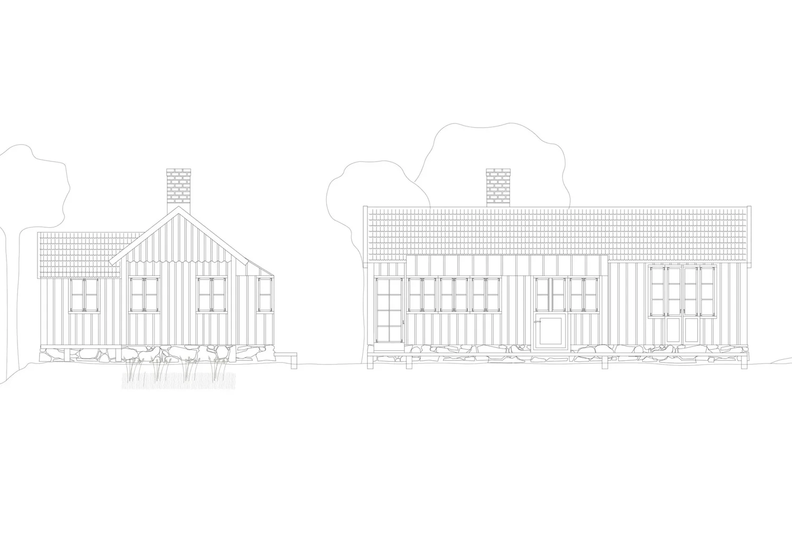
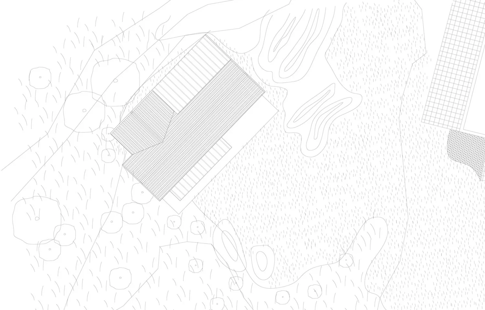
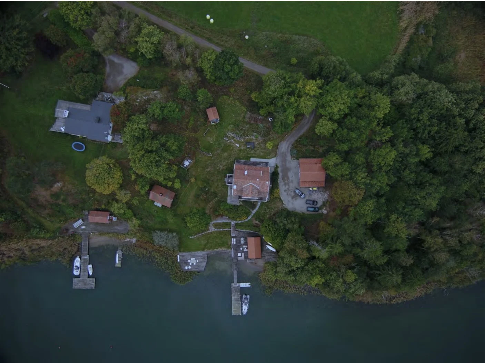
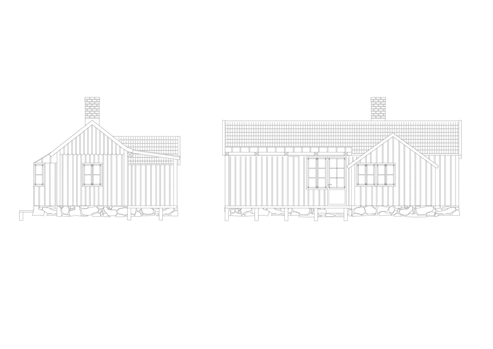

Ösmo · Pågående
Tillägg av mindre boningshus på gårdstomt. Inspiration hämtades från befintlig angränsande parstuga. Målet för nybyggnaden var att passa in med de befintliga husens typologi, att avgränsa mot vind och generera lättillgängliga sällskapsytor inne och ute.



